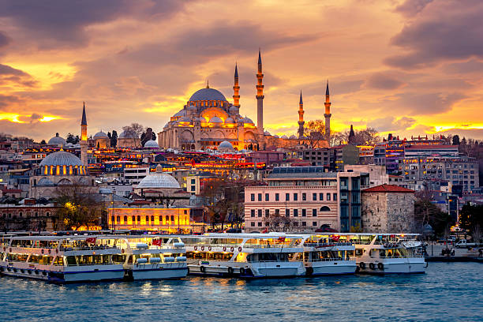

Istanbul is one of Turkey's most fascinating destinations, offering an impressive combination of history, culture, architecture and modern attractions. However, the experiences do not end within the city. The surrounding region has beautiful islands, historic towns, peaceful lakes, coastal villages and impressive natural landscapes waiting to be explored.
Taking a day trip beyond the city is a great way to discover another side of Turkey and add variety to your holiday. Whether you are interested in Ottoman history, outdoor adventures, nature or a relaxing seaside escape, there are plenty of destinations to consider.
From the historic streets of Bursa to the peaceful shores of Sapanca Lake and the picturesque Princes' Islands, these destinations offer memorable experiences outside Istanbul. Travellers planning a wider Turkish holiday can also explore the Turkey holiday options from Arooha Tours while deciding which places to include in their itinerary.
Best Day Trips from Istanbul to Add to Your Itinerary
1. Princes' Islands – Enjoy a Peaceful Island Escape
The Princes' Islands in the Sea of Marmara are among the most popular escapes from Istanbul. Known for their peaceful atmosphere, historic wooden mansions and attractive waterfronts, the islands offer a refreshing change from the busy city.
Büyükada is the largest and one of the best-known islands. Visitors can explore its charming streets, admire historic houses, enjoy seaside restaurants and take in beautiful coastal views. Heybeliada and Burgazada are also worth considering for their relaxed atmosphere and scenic surroundings.
Top Attractions and Activities:
- Enjoy a scenic ferry journey across the Sea of Marmara.
- Explore the historic wooden mansions on Büyükada.
- Walk along the waterfront and enjoy sea views.
- Visit local cafes and traditional restaurants.
- Discover the quieter streets and natural surroundings of the islands.
The Princes' Islands are a wonderful choice for couples, families and anyone looking for a relaxing break from Istanbul's busy streets. Check ferry schedules before travelling, as services and journey times vary.
2. Bursa – Explore Ottoman History and Culture
Bursa is an important destination for anyone interested in Turkish history and architecture. It served as an early capital of the Ottoman Empire and is home to historic mosques, traditional markets, cultural landmarks and beautiful mountain scenery.
The Grand Mosque of Bursa, also known as Ulu Cami, is one of the city's most significant landmarks. The Green Mosque and Green Tomb are other notable attractions, recognised for their distinctive architecture and decorative details.
Nature lovers can also explore the surroundings of Mount Uludağ, which is popular for outdoor activities and winter sports. Bursa is also famous for its Iskender kebab, a traditional dish worth trying during your visit.
Best Sights and Activities:
- Visit the historic Grand Mosque of Bursa.
- Explore the Green Mosque and Green Tomb.
- Browse traditional Turkish markets and bazaars.
- Enjoy the mountain scenery around Uludağ.
- Try the city's famous Iskender kebab.
Bursa offers a rewarding combination of Ottoman heritage, local food and natural scenery. Allow enough time for transport, as the journey from Istanbul can take a significant part of the day.
3. Sapanca and Maşukiye – Experience Natural Beauty
Sapanca and Maşukiye are attractive destinations for travellers who enjoy lakes, forests and outdoor activities. Located in the Sakarya region, they offer a refreshing escape from Istanbul's urban environment.
Sapanca is best known for its beautiful lake and peaceful surroundings. Visitors can enjoy lakeside walks, relax at cafes and admire the scenery. Maşukiye, on the other hand, is surrounded by green hills, streams and forested areas, making it popular for nature-based experiences.
Depending on the season and local availability, visitors can also enjoy outdoor activities such as ATV rides and ziplining. Traditional Turkish breakfasts at local restaurants are another popular part of the experience.
Best Sights and Activities:
- Enjoy the scenic views around Sapanca Lake.
- Explore the green landscapes of Maşukiye.
- Visit nearby streams and waterfalls.
- Try outdoor activities where available.
- Enjoy a traditional Turkish breakfast in a natural setting.
These destinations are ideal for families, couples and nature lovers. They are particularly appealing to travellers who want to combine peaceful scenery with light outdoor adventures.
4. Şile and Ağva – Discover Beautiful Coastal Towns
Şile and Ağva are charming coastal destinations along Turkey's Black Sea coast. Both are known for their natural scenery, relaxed atmosphere and opportunities to enjoy a quieter side of the region.
Şile is famous for its historic lighthouse, coastal viewpoints and beaches. Visitors can explore the waterfront, enjoy sea views and spend time at local cafes. Ağva offers a different experience, with rivers, green surroundings and boat trips along the Göksu and Yeşilçay rivers.
Top Attractions and Activities:
- Visit the historic Şile Lighthouse.
- Relax at the beaches and coastal viewpoints.
- Enjoy boat rides along Ağva's rivers.
- Explore local cafes and restaurants.
- Take photographs of the coastal and riverside scenery.
Şile and Ağva are excellent choices for travellers seeking a peaceful seaside escape. Visiting both in one day is possible with careful planning, although transport time should be considered.
5. Edirne – Explore Ottoman Architecture
Edirne is a historic city in northwestern Turkey, known for its impressive Ottoman architecture and cultural heritage. It served as an Ottoman capital before the conquest of Constantinople and remains an important destination for history enthusiasts.
The city's most famous landmark is the Selimiye Mosque, designed by the celebrated Ottoman architect Mimar Sinan. Its impressive dome, elegant minarets and detailed interior make it one of the finest examples of Ottoman architecture.
Visitors can also explore the Old Mosque, traditional bazaars and historic bridges. Edirne is famous for its tava ciğer, a local speciality made with thinly sliced fried liver.
Best Sights and Activities:
- Visit the magnificent Selimiye Mosque.
- Explore the historic Old Mosque.
- Discover traditional Turkish bazaars.
- See the city's historic Ottoman bridges.
- Sample Edirne's famous tava ciğer.
Edirne is a rewarding destination for anyone interested in Turkish history and architecture. However, it is a relatively long journey from Istanbul, so an early start is essential for a day visit.
6. Yalova – Enjoy Relaxation and Thermal Springs
Yalova is a peaceful destination known for its thermal springs, green landscapes and relaxing atmosphere. Located across the Sea of Marmara from Istanbul, it offers a different kind of escape for travellers who want to slow down and enjoy nature.
The Yalova Thermal Springs area attracts visitors interested in thermal bathing and wellness experiences. Sudüşen Waterfall is another highlight, surrounded by forested scenery and offering attractive spots for photography.
Best Sights and Activities:
- Experience the thermal bathing facilities.
- Visit the scenic Sudüşen Waterfall.
- Explore the surrounding forest landscapes.
- Enjoy local Turkish food.
- Relax in the town's peaceful natural surroundings.
Yalova is a good choice for travellers looking for relaxation and nature. Ferry services can make the journey convenient, but check departure times and onward transport before planning your visit.
7. İznik – Explore Ancient History and Lakeside Views
İznik is a historic town known for its ancient city walls, religious landmarks and distinctive ceramic tradition. It has an important place in Turkish history and offers a quieter alternative to the more crowded attractions around Istanbul.
The Hagia Sophia of İznik, also known as Orhan Mosque, is one of the town's notable historical landmarks. Visitors can also explore sections of the ancient city walls, discover traditional İznik ceramics and enjoy views of Lake İznik.
Best Sights and Activities:
- Explore the remains of the ancient city walls.
- Visit the historic Hagia Sophia of İznik.
- Discover traditional İznik ceramic workshops and shops.
- Enjoy peaceful views around Lake İznik.
- Explore local markets, cafes and historic streets.
İznik is an appealing destination for travellers interested in history, traditional crafts and lakeside scenery. As it takes time to reach from Istanbul, plan your transport carefully if visiting for just one day.
Tips for Planning Your Day Trips from Istanbul
A little preparation can make your excursions more enjoyable and help you use your time effectively. Keep these practical tips in mind before leaving the city.
- Start Early: Leave in the morning to make the most of your time at the destination, particularly when travelling farther from Istanbul.
- Choose the Right Destination: Select places according to your interests, whether you prefer history, nature, adventure, shopping or relaxation.
- Check Transportation: Review ferry schedules, bus connections, road conditions and return journeys before setting out.
- Pack Essentials: Carry comfortable shoes, sunscreen, drinking water and weather-appropriate clothing.
- Allow Enough Travel Time: Traffic and transport connections can affect your schedule, especially during weekends and holidays.
- Consider Organised Tours: Guided excursions can simplify transport and sightseeing, particularly for destinations with several attractions.
Conclusion
Istanbul offers much more than its famous mosques, palaces and bustling bazaars. The surrounding region is filled with opportunities to discover Turkey's history, natural beauty and traditional culture.
From the peaceful Princes' Islands and historic Bursa to the scenic landscapes of Sapanca, the coastal towns of Şile and Ağva, and the architectural heritage of Edirne, each destination offers a different experience. Yalova and İznik are also worth considering for travellers interested in relaxation, history and lakeside scenery.
Exploring these destinations can add variety to your Turkish holiday and help you discover places beyond the city. Choose your excursions according to your interests, check travel arrangements in advance and allow enough time to enjoy each destination.
If you are planning a wider trip, explore the Turkey holiday options from Arooha Tours to discover more ways to experience the country's attractions and culture.